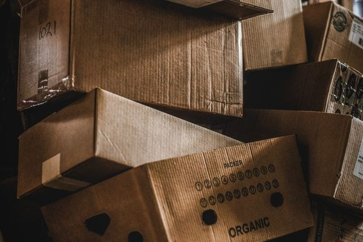

EU Anti-Greenwashing Rules Are Live: The Packaging Claim Audit Buyers Should Run Before the Next Print Run
On 27 September 2026, the EU's Empowering Consumers for the Green Transition Directive — Directive (EU) 2024/825, known as EmpCo — became applicable across all 27 member states. From that date, a wide set of environmental claims on products, packaging, advertising and websites moved from "marketing language" into regulated territory, with fines of up to 4% of annual turnover for breaches.
For packaging buyers, the impact is unusually direct. A problematic claim on a webpage can be edited overnight. A problematic claim on packaging is printed — in ink — on hundreds of thousands of units, with reprint cycles measured in months and inventory sitting in warehouses on two continents. Since 27 September, every green word on your packaging is a legal filing, not marketing copy.

What the Directive Actually Bans
EmpCo works by blacklisting specific commercial practices. Four of the prohibitions land squarely on anyone putting boxes, bags or mailers into Europe:
1. Generic claims without recognised excellent environmental performance. Words like "eco-friendly", "green", "environmentally friendly", "eco" or "climate neutral" may no longer appear unless the claim rests on recognised excellent environmental performance — in practice, verifiable, publicly accessible evidence measured against a credible benchmark. A vague virtue word with no yardstick behind it is now an unfair commercial practice.
2. Whole-product claims for part-product virtues. A claim about the entire product or packaging is banned when it only concerns one aspect of it. The classic packaging case: "recyclable packaging" printed on a carton with a plastic window, or on a laminated pouch where only one layer is recyclable in the buyer's market in practice. The claim describes the buyer's wish; the construction tells a different story.
3. Self-certified sustainability labels. Sustainability labels or logos that a company designed itself — the small green-leaf badges invented by a marketing department — no longer count. Only labels based on third-party certification schemes or established by public authorities survive. If the badge was drawn in-house, it has to go.
4. Offset-based neutrality claims. "Carbon neutral", "CO₂ neutral", "climate positive" and similar claims can no longer be supported by carbon offsetting. If the neutrality was purchased rather than achieved in the product or its supply chain, the claim is banned outright.
(The directive also targets planned-obsolescence tactics and vague durability claims on goods — less relevant to packaging, but part of the same enforcement wave.)
The Inventory Problem Nobody Budgeted For
The uncomfortable part of the 27 September date is that it catches stock, not just artwork. Packaging already printed, already on the water, already sitting in a 3PL warehouse — if it carries an unsubstantiated claim, it is now problematic inventory, and the question of what to do with it is a commercial decision with legal edges.
Belgium gave businesses a transitional sell-through window until 27 March 2027 for goods produced or placed on the market before 27 September 2026. Transition arrangements vary by member state, so the position of any given SKU depends on where it is sold. Either way, the audit cannot wait for the next scheduled reprint — the liability attaches to what is on the shelf today.
Where the Evidence Actually Lives: The Sourcing Angle
This is the part that concerns buyers sourcing from China directly. The factory prints what you approve — the claim decision sits with the brand. But the evidence that makes a claim lawful lives in the supply chain: the material certificate, the chain-of-custody document, the test report, the certification number. Three failure modes show up again and again in the industry:
Marketing writes the claim; nobody checks the construction. "100% recyclable" on a laminated pouch. "Plastic-free" on a folding carton with a plastic hang tab. "Compostable" on packaging whose certification, if it exists at all, covers industrial composting that the buyer's market doesn't offer. The claim was approved against a mood board, not a bill of materials.
The certificate exists but doesn't cover the claim. An FSC chain-of-custody certificate documents responsible forestry — it does not make a box "eco-friendly". A test report on the base board says nothing about the ink, the adhesive or the lamination applied on top of it. Evidence is specific; claims are often not.
The evidence existed once, for one production run. Certificates expire. Materials get substituted when prices move — an "equivalent" board swapped in during a cost squeeze, a different ink system nobody recorded. The printed claim keeps sailing on paperwork that no longer describes the goods.
The Six-Step Claim Audit Before Your Next Print Run
Run this before any artwork goes to press for the EU market:
1. Inventory every environmental claim on every SKU's packaging. Words, logos, symbols — and the imagery around them. Green leaves, planets and pristine forests imply environmental benefits and draw the same scrutiny as text.
2. For each claim, name the evidence and where it is filed. Certificate number, test report date, the standard it was tested against, who holds the document, when it expires. "Our supplier assured us" is not evidence.
3. Run the whole-vs-part test. Does the claim describe the entire pack, or only one component of it? Reword to the provable scope — or remove what can't survive the test.
4. Retire every self-made eco logo. Replace with third-party certification where the claim is worth keeping and the evidence exists. Where it isn't, remove the badge rather than defending it.
5. Rebuild the artwork approval gate. No environmental claim goes to print without its evidence attached to the approval record. Make it a checklist item, not a judgement call — and make the supplier confirm in writing which materials and processes the evidence covers.
6. Check the printed pack against the approved artwork before shipment. Artwork drifts between approval and mass production: a claim reworded by a designer, a logo re-added "because it looked empty", a substrate changed for cost. A final verification that what was printed matches what was approved closes the loop.
What Comes Next: The Second Wave
EmpCo is the first wave, and it works by banning the words. The second wave — the Green Claims Directive proposal, which would require environmental claims to be pre-verified by an accredited verifier before they may be used at all — fell off the legislative agenda in 2025, with enforcement of that regime now expected around 2027–2028. The direction of travel is consistent: this year the vague claim becomes illegal; within a few years the specific claim will need its proof filed before it is printed.
There is a strategic risk worth naming alongside the legal one: greenhushing. Some brands will respond to EmpCo by stripping every environmental claim off their packaging rather than substantiating them — surrendering differentiation they paid good money to earn. The audit above is the alternative: keep the claims you can prove, at the level of specificity your evidence actually supports, and let the competitors go quiet.
The Sourcing Takeaway
Like PPWR's Declaration of Conformity before it, EmpCo moves compliance from the legal department to the purchase order. The buyers coping well share one habit: they treat claim evidence as a deliverable with the same seriousness as price and lead time — requested at RFQ stage, verified before production, re-checked before shipment.
That is local work: aligning the specification — printed claims included — with the supplier before production, keeping visibility while goods are made so substitutions surface early, and checking the finished packaging against the approved artwork before it ships. The product that ships should be the product the paperwork describes. Words on the box included.
This article shares industry information for general guidance only and does not constitute legal advice. For formal compliance questions, please consult qualified regulatory counsel.